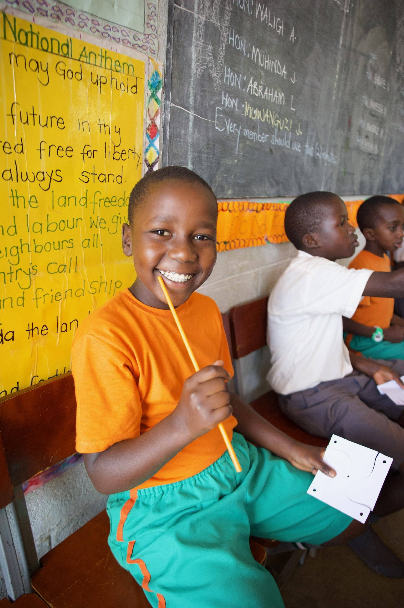

The Classroom Crisis: Inside Uganda's Fight for Education
In Uganda's most underserved districts, fewer than 40% of children complete primary school. A new generation of purpose-driven brands is working to change that — one purchase at a time.
Americans Spent $350 Billion on Clothing Last Year. Where Did It All Go?
New data on U.S. apparel spending reveals a market at a crossroads — and a growing consumer appetite for brands that do more than dress you well.

The 1% Pledge: How Small Fashion Brands Are Funding Big Change
From graphic tees to outerwear, a quiet movement of impact-first brands is proving that fashion and philanthropy don't have to be mutually exclusive.

Uganda by the Numbers: What the Data Reveals About the Education Gap
Class sizes of 80. Teacher absenteeism rates above 25%. The statistics behind Uganda's education crisis paint a picture that demands a response.
Dressing With Intention: The Rise of Purpose-Driven Style
Conscious consumers are no longer just thinking about what they wear — they're thinking about what their clothes fund, build, and change.

Uganda in Focus: A Photo Gallery
Nine photographs from inside the schools and communities that Go Be Love's impact purchasing model is transforming.